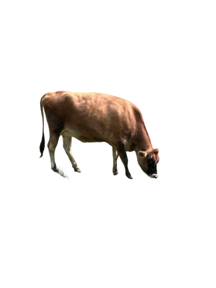
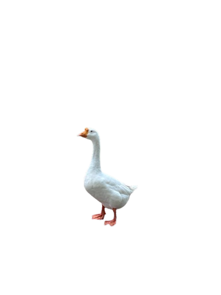

WebAR 生態互動任務
🌙 飛牛棲地救援
夜幕降臨，白天的牧場裡其實藏著許多平常看不見的生態秘密！快啟動夜間透視，把迷路的動物送回最適合牠們的家。




步驟 1｜夜間透視捕捉：對準草原看板掃描，點擊浮現的 4 隻隱藏動物。
步驟 2｜棲地救援配對：將動物拖曳回正確棲地，解鎖生態知識並領取證書！
夜幕降臨，白天的牧場裡其實藏著許多平常看不見的生態秘密！快啟動夜間透視，把迷路的動物送回最適合牠們的家。


將捕捉到的動物，拖曳回最適合牠的自然棲地（進度：0/4）
適合食草、需要寬廣活動空間的動物
適合親水、於池塘與岸邊覓食的水禽
具備豐富植被與特定蜜源植物的林蔭環境
山羊
紫斑蝶